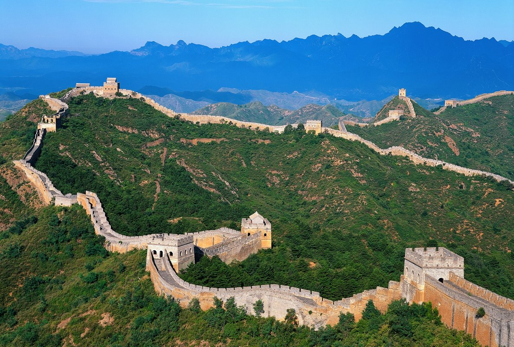

長城
長城是中國古代為抵禦不同時期塞北游牧帝國或部落聯盟的侵襲，在西北方所修築規模浩大的隔離牆或軍事工程的統稱。長城雖為城牆，但不做為完全
單一條絕對隔離線，而是多層檢查通行的邊防口，實際上還主動發揮指導經貿交流的兩手策略，東西段與前後關卡加總起來可綿延上萬華里（約4500-6000千
公尺），因此又稱作萬里長城。
2012年，中國國家文物局完成了長城資源認定工作，將春秋戰國至明朝等各時代修築的長城牆體、敵樓、壕塹、關隘、城堡以及烽火台等相關歷史遺存認定為
長城資源，將其他具備長城特徵的文化遺產納入《長城保護條例》的保護範疇。根據認定結論，各時代長城資源分布於北京、天津、河北、山西、內蒙古、
遼寧、吉林、黑龍江、山東、河南、陝西、甘肅、青海、寧夏、新疆15個省（自治區、直轄市）404個縣（市/區）。認定數據如下：各類長城資源遺存總數
43,721處（座/段），其中牆體10,051段，壕塹/界壕1,764段，單體建築29,510座，關、堡2,211座，其他遺存185處。牆壕遺存總長度21,196.18公里。
歷代長城
中國北方自古便不安寧。自春秋戰國以來，便有修築長牆，以阻北方遊牧民族的劫掠的史料。而修建長城之舉，至今已有兩千多年的歷史，其中以秦、漢、明
三時期的規模最大。《延慶州志》記載：「古長城，在州南二十餘里，即燕塞，燕昭王用秦開謀，置上谷塞，自上谷以北至遼西。秦始皇因其舊址而大築之，
至今岔道以北迤邐而至永寧一帶遺址猶存」。
唐朝時，由於北方的突厥在唐太宗時已經被平定而不再成為威脅，此後三百年未修長城；後晉割讓燕雲十六州，使得之後宋朝修築長城變得沒有意義；元朝
統治者是蒙古人，僅對一些關口做了修繕，只起到盤查路人和作為商路驛站的作用；與元朝類似，清朝直到滅亡也未修長城。
因而，近來實際修築長城僅有明朝，今日所見長城多為明朝建築。而到了二十世紀，在科技的發展下，長城已基本失去阻禦外敵的軍事功能，只有長城戰役
勉強算得上再參與了一次作戰。
長城構築
長城的構築，以「因地形，據險制塞」為基本法則。「因地形」，即指根據地形條件而構築工程，和充分利用在地的自然資源選擇合適的建築材料。「據險制
塞」，主要是指利用地理天險禦敵。這條原則有利於防守，也可以節省建築材料。
長城的修築從春秋到明後期，持續了兩千多年。由於各個時代的生產力、技術水平不同，也由於各個政權所面臨的軍事形勢不同，歷代修建的長城在構造、
建築方法及形制方面都互有不同；而由於各處地理條件的差異，即使同一時代所修的長城面貌也有不同。
就不同歷史時期和築城技術的發展而言，北魏以前各朝所修的長城，以版築夯土為主，北魏時出現了磚石結構的長城，明代長城則廣泛運用了石砌法、磚砌法
、磚石混砌法，從橫切面之觀察更含三角學上的應用，特別在陡坡上的鞏固方面起了作用。
就長城沿線各地的地理條件之不同而言，建造長城所需的材料均按「因地制宜」的原則就地取材解決。崔豹《古今注·都邑》說：「秦所築長城，土色皆紫
，漢亦然，故云紫塞焉。」在山地，則開山取石壘牆；在黃土地帶，則取夯土築；在沙漠，則用蘆葦或柳條，加以層層鋪沙修築。此外，砌牆所用的磚、瓦、
石灰和木料等，除就地設窯燒制或砍伐外，官府還設有專門部門供應。